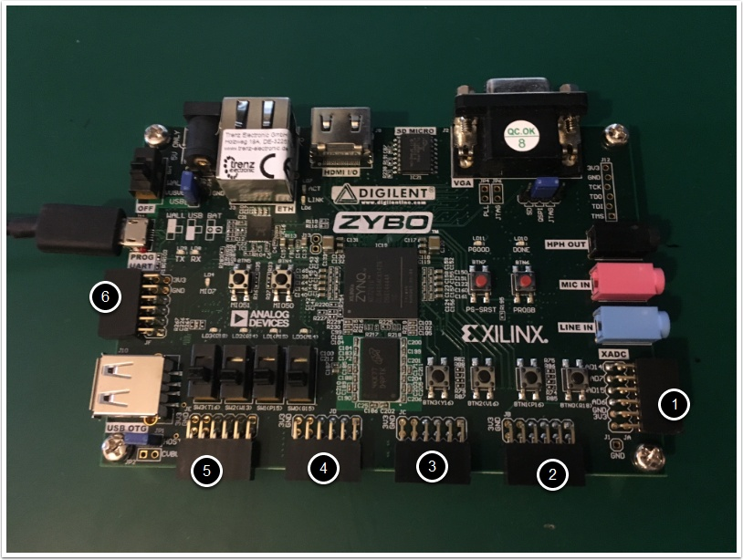
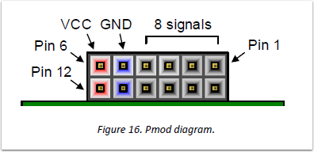
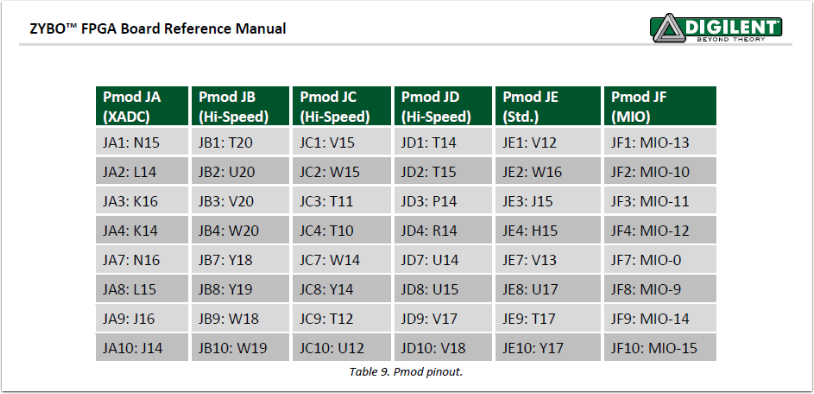
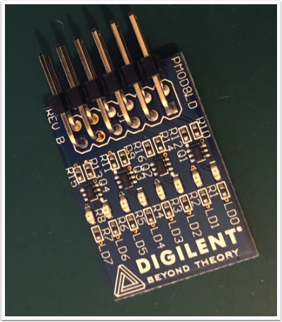

This article explain how capabilities of powerful Xilinx FPGA ZYBO board can be expanded by using Pmod extensions from Digilent.
Using Digilents PMOD8LD with ZYBO FPGA board

Xilinx FPGA ZYBO board is perfect tool to learn FPGA programming. It is powerful but also a little bit limited if you compare to others boards from competitors. One of its limitation is amount of LED. Only 4 green LED available on board, luckily we have 6 PMOD extension ports!
Digilent produces a large collection of Pmod accessory boards which can attached to Pmod expansion connectors to add ready-made functions like A/D’s, D/A’s, motor drivers, sensors, and other functions. See www.digilentinc.com for more information.
According ZYBO Reference Manual : Six Pmod connectors can be used (1 processor-dedicated, 1 dual analog/digital, 3 high-speed differential, 1 logic dedicated)
1. Pmod JA : XADC Pmod
2. Pmod JB : High-speed Pmod
3. Pmod JC : High-speed Pmod
4. Pmod JD : High-speed Pmod
5. Pmod JE : Standard Pmod
6. Pmod JF : MIO Pmod (Multiplexed I/O) to connect peripheral controllers.r

Pmod connectors
As ZYBO reference manual tells: Pmod connectors are 2x6, right-angle, 100-mil spaced female connectors that mate with standard 2x6 pin headers. Each 12-pin Pmod connector provides two 3.3V VCC signals (pins 6 and 12), two Ground signals (pins 5 and 11), and eight logic signals, as shown in Fig. 16. The VCC and Ground pins can deliver up to 1A of current, but care must be taken not to exceed any of the power budgets of the onboard regulators or the external power supply.

1. JA Dual Analog/Digital Pmod (XADC Pmod)
The on-board Pmod expansion connector labeled “JA” is wired to the auxiliary analog input pins of the PL. Depending on the configuration, this connector can be used to input differential analog signals to the analog-to-digital converter inside the Zynq (XADC). Any or all pairs in the connector can be configured either as analog input or digital input-output. For more information on using the XADC core, refer to the Xilinx document titled “7 Series FPGAs and Zynq-7000 All Programmable SoC XADC Dual 12-Bit 1 MSPS Analog-to-Digital Converter.” It is also possible to access the XADC core directly using the PS, via the “PS-XADC” interface. This interface is described in full in chapter 30 of the Zynq Technical Reference Manual.
2(JB), 3(JC), 4(JD) - High-Speed Pmods
High-speed Pmods use standard Pmod connector but have no protection(with loading resistors) against short circuits but allow much faster speeds. The signals are apired to the adjacent signals in same row: pins 1 and 2, 3 and 4, 7 and 8, 9 and 10.
Use it only if Standard Pmod is occupied.
5. JE Standard Pmod
The standard Pmod connector is connected to the PL of the Zynq via 200 Ohm series resistors. The series resistors prevent short circuits that can occur if the user accidently drives a signal that is supposed to be used as an input. The downside to this added protection is that these resistors can limit the maximum switching speed of the data signals. If the Pmod being used does not require high-speed access, then the standard Pmod connector should be used to help prevent damage to the devices.
6. JF MIO Pmod
MIO Pmod connected to MIO bus in PS of Zynq via 200Ohm resistors. Since signals connected to MIO interface only GPIO, UART, I2C and SPI cores can be used to access devices connected to this Pmod.
Pmod pinout
It is important to create correct entries in XDC constraints file according to table from Reference Manual. Example of XDC for Standard Pmod port at the end of article.

Pmod8LD
Implements very basic extension - Simple 8 LED! It can be connected to JE Standard Pmod.

Technical specifications
- Voltage supply: 3.3V-5V
- supply current: up to 100mA.
- signal frequency : up to 24MHz
- extension cable length up to 50cm.
Sample code
To use that Pmod you can follow simple project just replace its code with following below:
top_gates2.v
`timescale 1ns / 1ps
module top_gates2(
input [1:0] sw,
output [7:0] led
);
gates2 C1(
.a(sw[0]),
.b(sw[1]),
.z(led)
);
endmodule
gates2.v
module gates2(
input a,
input b,
output [7:0] z
);
wire a,b;
reg [7:0]z;
always @(a or b)
begin
z[0] = a & b;
z[1] = a | b;
z[2] = a ^ b;
z[3] = !(a | b);
z[4] = !(a & b);
z[5] = a -^ b;
z[6] = !a;
z[7] = !b;
endmodule
ZYBO_Master.xdc
##Switches
##IO_L19N_T3_VREF_35
set_property PACKAGE_PIN G15 [get_ports {sw[0]}]
set_property IOSTANDARD LVCMOS33 [get_ports {sw[0]}]
##IO_L24P_T3_34
set_property PACKAGE_PIN P15 [get_ports {sw[1]}]
set_property IOSTANDARD LVCMOS33 [get_ports {sw[1]}]
#LEDs
set_property PACKAGE_PIN V12 [get_ports {led[0]}]
set_property IOSTANDARD LVCMOS33 [get_ports {led[0]}]
set_property PACKAGE_PIN W16 [get_ports {led[1]}]
set_property IOSTANDARD LVCMOS33 [get_ports {led[1]}]
set_property PACKAGE_PIN J15 [get_ports {led[2]}]
set_property IOSTANDARD LVCMOS33 [get_ports {led[2]}]
set_property PACKAGE_PIN H15 [get_ports {led[3]}]
set_property IOSTANDARD LVCMOS33 [get_ports {led[3]}]
set_property PACKAGE_PIN V13 [get_ports {led[4]}]
set_property IOSTANDARD LVCMOS33 [get_ports {led[4]}]
set_property PACKAGE_PIN U17 [get_ports {led[5]}]
set_property IOSTANDARD LVCMOS33 [get_ports {led[5]}]
set_property PACKAGE_PIN T17 [get_ports {led[6]}]
set_property IOSTANDARD LVCMOS33 [get_ports {led[6]}]
set_property PACKAGE_PIN Y17 [get_ports {led[7]}]
set_property IOSTANDARD LVCMOS33 [get_ports {led[7]}]
Video
https://youtu.be/tRzPB6LpDLw